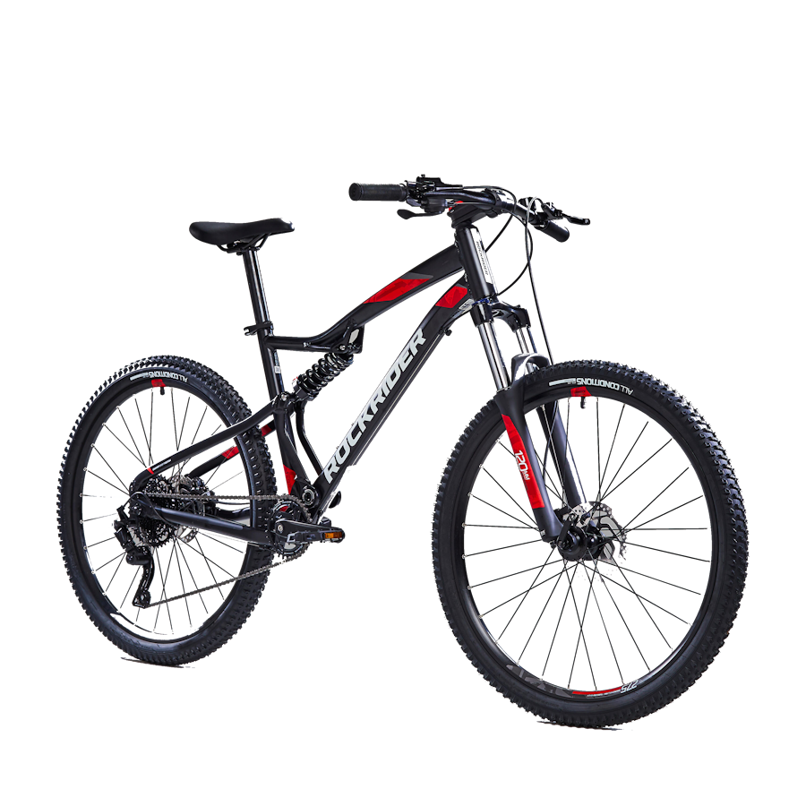
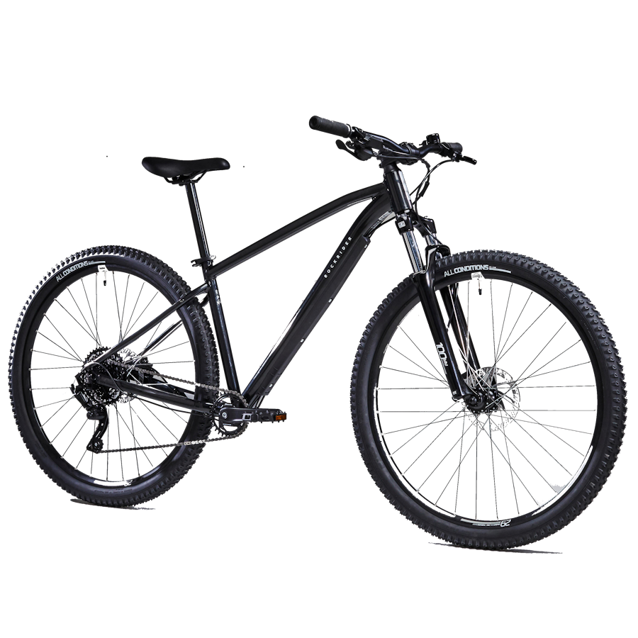

Aqui te enseñamos algunos modelos junto a su precio, que contendrán su enlace a la tienda donde puedes conseguirlas ademas de una breve descripción sobre ellas
BTT ST 120
¡Una BTT técnica y cómoda! Pilotando la BTT ST 120, sentirás la precisión y la ligereza que te ofrecen su monoplato (1x9 velocidades) y sus frenos de disco mecánicos. Adapta fácilmente tu velocidad. Esta bicicleta de montaña de 27,5" ha sido concebida para tus primeras travesías en MTB de hasta 1 h 30 min, con tiempo seco. Adaptada a la morfología de mujer.
Por 339.99€
BTT ST 530 ST
Disfruta del confort de la suspensión 120 mm delantera y trasera de la BTT ST 530 S. Para adaptarte a las irregularidades del terreno, el monoplato y los frenos disco hidráulicos serán tu mejor aliado. Esta BTT de 27,5" ha sido concebida para tus travesías en BTT, todo el año, de 2 a 3 horas.
Por 599,99€
Rockrider XC 100 S
Elige esta MTB con suspensión total y una geometría XC. Las ruedas de 29" proporcionan velocidad e inercia durante el esfuerzo físico. Compatible con 3 tamaños de ruedas (27,5", 29" y 27,5" PLUS). Esta BTT ha sido concebida para lanzarse a practicar MTB Cross Country (XC).
Por 1399,99€
Rockrider Explore 500
Comodidad y capacidad de respuesta frente a la irregularidades del terreno: ¡las ruedas 29" (27,5" en S), el monoplato y los frenos de disco hidráulicos de la MTB EXPL 500 cambiarán tus travesías MTB! Esta bicicleta de montaña de 29" ha sido diseñada para travesías MTB de 2 a 3 horas, todo el año.
Por 499,99€
